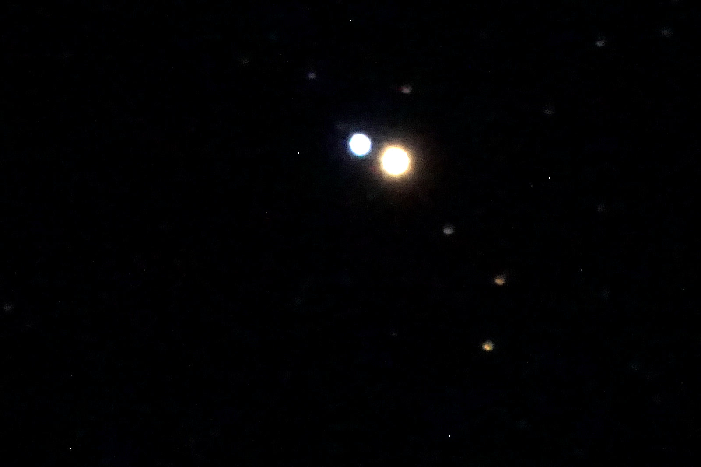
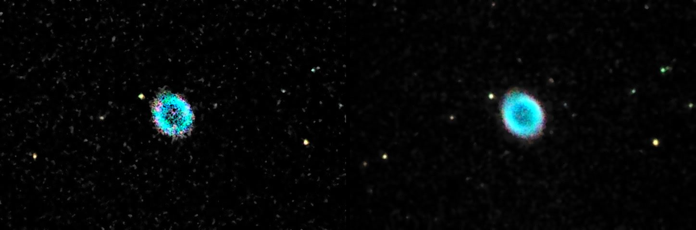
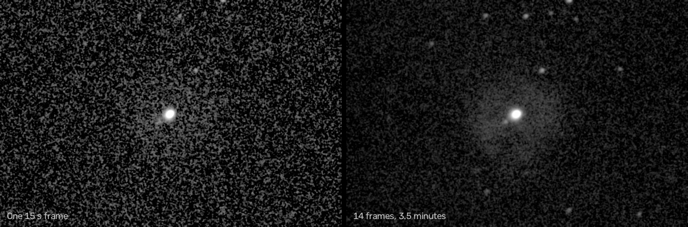

One button, a crooked tripod, and a camera that works out where the telescope is pointing
The goal for the night was simple. Put the telescope on a crooked tripod, push one button, and have the software figure out where it's pointing on its own. No leveling. No North Star. After that I wanted to take the camera off, put an eyepiece in, and show some kids a few things before bedtime.
I told Claude the setup was "the most out of level, out of polar alignment telescope mount that you've ever seen in your entire life." That wasn't much of an exaggeration. The software measured it later: the mount's polar axis was pointing 13 degrees away from the pole.
The telescope is a Celestron 8SE tube on a Sky-Watcher EQ6-R mount. A Sony a6000 sits where the eyepiece goes. A Raspberry Pi on the tripod runs the software that drives both of them, and I talk to it from my phone. Claude sat at my Mac Studio inside, connected to the Pi over the network.
The camera works out where it's pointing in about five seconds
The trick that makes all of this possible is called plate solving. You take a photo of some stars, and a program called astrometry.net compares the pattern of those stars against a catalog of millions of them until it finds where in the sky the photo was taken. It doesn't need to know anything ahead of time.
The first try failed, and it was our fault. The Pi still remembered where the telescope had been pointing the last time I set it up, a week ago, in a different spot. It told the plate solver to only look near that old position, and the solver dutifully searched the wrong part of the sky until it gave up. Once Claude cleared that out, a blind solve on the Pi took 5.3 seconds and matched 93 stars. That's a computer the size of a deck of cards finding a photo's place in the whole sky faster than I can find the eyepiece in the dark.
One photo isn't enough, so it moves and takes four
One photo tells you where the telescope is pointing right now. It doesn't tell you how the mount is sitting, and you need that to point it anywhere else. So the button takes a photo, moves the mount about 15 degrees, takes another, and keeps going until four photos agree. From those four, the software fits a model of how the mount is actually tilted.
The whole thing took about three and a half minutes. The four photos agreed with each other to 14 arcseconds, which is roughly the width of a coin seen from a quarter mile away.
Later in the night the power cut out and we had to start over (more on that below). The second alignment came out 13.4 degrees off the pole. The first had said 13.3. Two separate runs, a couple of hours apart, agreeing to a tenth of a degree. I'll take it.
Plates can't tell which side the counterweight is on
This one nearly cost me a camera.
A mount like mine can point at the same star two different ways: with the tube on the east side and the counterweight hanging down on the west, or the other way around. The photos look exactly the same either way, because the camera sees the same sky. So the software has to guess which way the mount is actually sitting, and it guessed wrong.
I asked it to go to the Andromeda Galaxy and it swung the telescope around so the counterweight was pointing up at the sky and the camera was a few inches from one of the tripod legs. I took a photo and sent it to Claude, and told it this was the second time it had gotten the counterweight wrong, so figure out how to keep it from happening again. The same thing happened a week ago.
The fix is to stop guessing. If the software doesn't know which way the counterweight is hanging, it now refuses to move the telescope until somebody answers one question: is the counterweight bar below level or above level right now? Anyone standing next to the telescope can answer that by looking at it. The camera alignment asks it as its last step.
Go To, then take one more picture to center it
Once the alignment was in, I asked for Albireo, a pair of stars near the top of the sky. The mount swung over, and when the camera took a photo, Albireo was 1.3 arcminutes from the center of a picture that's 39 arcminutes wide.

That's close enough to see in an eyepiece, but I wanted it dead center, so Claude wrote a feature that takes one more photo after the Go To, solves it, works out how far off it landed, and nudges the mount by exactly that much. On the Ring Nebula the Go To landed 5.5 arcminutes off. One nudge later it was a quarter of an arcminute from the middle.
The part that took a couple of tries was making the nudge stick. The software that keeps the telescope tracking the sky treats any move as its own Go To, and once the move finished it would quietly drift back to where it thought the target was, undoing the nudge. Now the nudge hands the tracker a corrected target:
# from Controller.Sky.Centre: the photo says where the tube really is (ra, dec); the model
# believes it's somewhere a little off from that (b_ra, b_dec). That difference is the model's
# error right here, and it's the same for a target a few arcminutes away. So aim at the target
# shifted by that error, go there, and hand the tracker the aim so it holds it.
with {b_ra, b_dec} <- Pointing.scope_radec(snap, ctx),
aim = %{name: t.name, ra_deg: norm360(t.ra_deg + Astro.norm180(b_ra - ra)), dec_deg: t.dec_deg + (b_dec - dec)},
{ra_a, dec_a} <- Pointing.axes_for(aim, ctx, near: cur) do
Tracker.track(run.id, aim, run.obj)
Mount.goto_relative(run.ref, :ra, Astro.norm180(ra_a - elem(cur, 0)))
Mount.goto_relative(run.ref, :dec, Astro.norm180(dec_a - elem(cur, 1)))
end
The motor that "stalled" without stalling
Halfway through a Go To to the Ring Nebula, both motors stopped and the software said the declination motor had stalled. Nothing was wrong with the motor. The driver checks every 1.5 seconds that each motor has moved about as far as it was told to. It had started one of those checks while the motor was creeping along at tracking speed, then judged the whole window as if it had been running at full speed the entire time. The fix was to start the check over whenever the motor gets a new command. Before the fix, whether a Go To tripped it came down to where in those 1.5 seconds it happened to start, so it only showed up now and then.
The box should pick up where it left off
I asked Claude to reboot the Pi on purpose, to see what came back. The alignment came back, the camera came back, and the game controller came back. The telescope did not go back to tracking what it had been looking at. It just sat there while the sky slid by.
Now it does. When the Pi starts and finds it was holding a target before it went down, it goes back to it, as long as the target hasn't moved too far to go back without somebody watching. The first version of this had a funny bug: when I picked a new target, there's a split second where the old target has let go and the new one hasn't started, and the new code saw that gap and dragged the telescope back to the old target. A fix that has to see the gap twice, three seconds apart, before it acts took care of it.
Kids at the eyepiece
By now a bunch of kids had shown up, so the camera came off and an eyepiece went in. Before I pulled the camera, Claude took two photos a minute apart to measure how well it was tracking. The stars moved 11 arcseconds in 58 seconds, which means an object stays in view for over an hour without anybody touching anything.
We built up to the good stuff. The Dumbbell Nebula looked more like an hourglass. The Ring Nebula looked like a smoke ring, and the kids got a kick out of hearing it didn't explode: a star about the size of our Sun puffed its outer layers off, and ours will do the same thing in about five billion years. The Double Double, which looks like two stars until you use more magnification and each one splits in two. Albireo, gold and blue. We ended on Saturn.
The Saturn trip was messy. It needed the big swing to the other side of the mount, and when it got there, the kids grabbed the game controller and went hunting at full speed. Full speed on that mount is about three degrees a second, which tripped the same stall check again for a different reason, and the tracking stopped. When Claude sent it back to Saturn with a plain Go To, it was right there. The aim had been fine all along.
What the cables did
Later on I left Claude to photograph the Ring Nebula on its own, and in the middle of the swing over to it, both the Pi and the mount lost power and restarted. The Pi keeps a little black box record of what it was doing, and its last line said both motors were running at full speed. When I went outside, the cables were wrapped around the mount. The swing to Saturn and the swing back had wound them up until a plug pulled loose.
The mount doesn't know where it is after it loses power, so we had to start over. That's where the second alignment came from, and the two agreeing so well. The software now needs to keep count of how many times the cables have been wound around and refuse to wind them further.
Letting the box run the plan
After that, Claude stopped driving the telescope step by step over the network, because every time the Wi-Fi hiccupped, whatever it was doing stopped halfway. Instead it handed the Pi a list: center the Little Dumbbell and take 30 photos, then the Ring, then Andromeda. The Pi ran that list on its own while Claude watched and copied the photos over to the Mac.
The photos also have to get off the Pi. The memory card is small, and each photo is about 30 megabytes. There's a queue for that now: it copies each photo to the Mac Studio, checks the copy against a fingerprint of the original, and only then deletes it from the Pi.
Two more things came up while it ran. You could catch the telescope moving while a picture was being taken: right after centering, the tracker takes up the last bit of error a little faster than the sky moves, and the first photos of the Crystal Ball Nebula came out smeared. The plan now waits for the tracking to settle before the shutter opens. And I tried to push for the Heart and North America nebulas, but they're huge, faint, and almost entirely deep red light that my stock camera filters out. That's a job for a different telescope on a different night.
Stacking without making anything up
A single 15 second photo through this telescope is noisy. Stacking a few dozen of them, lined up on the stars, cuts the noise down. I told Claude I didn't want any AI on the pictures themselves. It's fine for AI to write the software that stacks them, but the pixels should only come from math you can check: averages, measured corrections, and nothing that guesses what a nebula is supposed to look like.

The one that surprised me was the Crystal Ball Nebula. In a single photo you see a star and nothing else. Stack 14 of them and a shell of glowing gas shows up around it, the same size the catalogs say it should be.

The pictures from the night have their own page, with how each one was made.
What working with an AI was like
Mostly, I stood outside and Claude did the typing. It drove the telescope through the same software my phone uses, wrote fixes on the Mac while the telescope kept running, tested them against a simulated telescope, and sent the new software to the Pi in about a minute and a half each time.
It also got the order of things wrong when it mattered. At one point it told me to take the camera off and, in the same message, said it was about to update the software. I told it to do the update, make sure it was tracking, and only then tell me to touch the telescope. After that I told it to quit updating while kids were at the eyepiece, and it did. It also took me sending a photo of the counterweight sticking up at the sky before it believed the mount was in the wrong position.
What made the night work is that nearly everything it did by hand ended up as a feature: the one-button alignment, centering by photo, refusing to guess the counterweight, picking the hold back up after a reboot, waiting for the tracking to settle before taking a picture. It keeps a running list of the rest, which is about thirty items long. The next night out should need less of me and less of it.
What's next
The big one is cameras. The software has one set of pages for the little video camera I couldn't get to focus and a separate set for the Sony, and I kept opening the wrong one. I said it at the telescope and I'll say it again: the product should be focused around multiple cameras, and any camera should be able to do any job, so if one dies the night keeps going. After that, a cable count so the power doesn't get yanked again, and the observing list running on the Pi properly instead of as a script Claude writes on the fly.